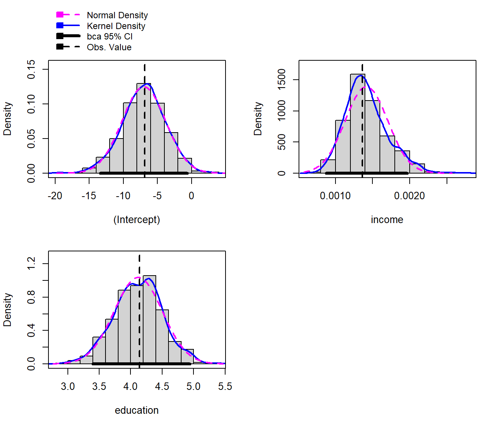

3.7 Bootstrap semiparamétrico y bootstrap residual
En ocasiones nos pueden interesar modelos semiparamétricos, en los que se asume una componente paramétrica pero no se especifica por completo la distribución de los datos. Una de las situaciones más habituales es en regresión, donde se puede considerar un modelo para la tendencia pero sin asumir una forma concreta para la distribución del error.
Nos centraremos en el caso de regresión y consideraremos como base el siguiente modelo general: \[\begin{equation} Y = m(\mathbf{X}) + \varepsilon, \tag{3.1} \end{equation}\] donde \(Y\) es la respuesta, \(\mathbf{X}=(X_1, X_2, \ldots, X_p)\) es el vector de variables explicativas, \(m(\mathbf{x}) = E\left( \left. Y\right\vert_{\mathbf{X}=\mathbf{x}} \right)\) es la media condicional, denominada función de regresión (o tendencia), y \(\varepsilon\) es un error aleatorio de media cero y varianza \(\sigma^2\), independiente de \(\mathbf{X}\) (errores homocedásticos independientes).
Supondremos que el objetivo es, a partir de una muestra: \[\left\{ \left( X_{1i}, \ldots, X_{pi}, Y_{i} \right) : i = 1, \ldots, n \right\},\] realizar inferencias sobre la distribución condicional \(\left.Y \right\vert_{\mathbf{X}=\mathbf{x}}\).
El modelo (3.1) se corresponde con el denominado diseño aleatorio, mas general. Alternativamente se podría asumir que los valores de las variables explicativas no son aleatorios (por ejemplo han sido fijados por el experimentador), hablaríamos entonces de diseño fijo. Para realizar inferencias sobre modelos de regresión con errores homocedásticos se podrían emplear dos algoritmos bootstrap (e.g. Canty, 2002, y subsecciones siguientes). El primero consistiría en utilizar directamente bootstrap uniforme, remuestreando las observaciones, y sería adecuado para el caso de diseño aleatorio. La otra alternativa, que podría ser más adecuada para el caso de diseño fijo, sería lo que se conoce como remuestreo residual, remuestreo basado en modelos o bootstrap semiparamétrico. En esta aproximación se mantienen fijos los valores de las variables explicativas y se remuestrean los residuos. Una de las aplicaciones del bootstrap semiparamétrico es el contraste de hipótesis en regresión, que se tratará en la Sección 5.4.
Se puede generalizar el modelo (3.1) de diversas formas, por ejemplo asumiendo que la distribución del error depende de \(X\) únicamente a través de la varianza (error heterocedástico independiente). En este caso se suele reescribir como: \[Y = m(\mathbf{X}) + \sigma(\mathbf{X}) \varepsilon,\] siendo \(\sigma^2(\mathbf{x}) = Var\left( \left. Y\right\vert_{\mathbf{X}=\mathbf{x}} \right)\) la varianza condicional y suponiendo adicionalmente que \(\varepsilon\) tiene varianza uno. Se podría modificar el bootstrap residual para este caso pero habría que modelizar y estimar la varianza condicional (en la Sección 7.4.4 se describe una aproximación no paramétrica). Alternativamente se podría emplear el denominado Wild Bootstrap que se describirá en la secciones 7.2.1 y 7.4.3 para el caso de modelos de regresión no paramétricos (sería directamente aplicable al caso paramétrico).
En esta sección nos centraremos en el caso de regresión lineal: \[m_{\boldsymbol{\beta}}(\mathbf{X}) = \beta_{0} + \beta_{1}X_{1} + \beta_{2}X_{2} + \cdots + \beta_{p}X_{p},\] siendo \(\boldsymbol{\beta} = \left( \beta_{0}, \beta_{1}, \ldots, \beta_{p} \right)^{T}\) el vector de parámetros (desconocidos). Su estimador mínimo cuadrático es: \[\boldsymbol{\hat{\beta}} = \left( X^{T}X\right)^{-1}X^{T}\mathbf{Y},\] siendo \(\mathbf{Y} = \left( Y_{1}, \ldots, Y_{n} \right)^{T}\) el vector de observaciones de la variable \(Y\) y \(X\) la denominada matriz del diseño de las variables regresoras, cuyas filas son los valores observados de las variables explicativas.
En regresión lineal múltiple, bajo las hipótesis estructurales del modelo de normalidad y homocedásticidad, se dispone de resultados teóricos que permiten realizar inferencias sobre características de la distribución condicional. Si alguna de estas hipótesis no es cierta se podrían emplear aproximaciones basadas en resultados asintóticos, pero podrían ser poco adecuadas para tamaños muestrales no muy grandes. Alternativamente se podría emplear bootstrap. Con otros métodos de regresión, como los modelos no paramétricos descritos en el Capítulo 7, es habitual emplear bootstrap para realizar inferencias sobre la distribución condicional.
En esta sección se empleará el conjunto de datos Prestige del paquete carData, considerando como variable respuesta prestige (puntuación de ocupaciones obtenidas a partir de una encuesta) y como variables explicativas: income (media de ingresos en la ocupación) y education (media de los años de educación).
Para ajustar el correspondiente modelo de regresión lineal podemos emplear el siguiente código:
data(Prestige, package = "carData")
# ?Prestige
modelo <- lm(prestige ~ income + education, data = Prestige)
summary(modelo)##
## Call:
## lm(formula = prestige ~ income + education, data = Prestige)
##
## Residuals:
## Min 1Q Median 3Q Max
## -19.4040 -5.3308 0.0154 4.9803 17.6889
##
## Coefficients:
## Estimate Std. Error t value Pr(>|t|)
## (Intercept) -6.8477787 3.2189771 -2.127 0.0359 *
## income 0.0013612 0.0002242 6.071 2.36e-08 ***
## education 4.1374444 0.3489120 11.858 < 2e-16 ***
## ---
## Signif. codes: 0 '***' 0.001 '**' 0.01 '*' 0.05 '.' 0.1 ' ' 1
##
## Residual standard error: 7.81 on 99 degrees of freedom
## Multiple R-squared: 0.798, Adjusted R-squared: 0.7939
## F-statistic: 195.6 on 2 and 99 DF, p-value: < 2.2e-16Como ejemplo, consideraremos que el objetivo es realizar inferencias sobre el coeficiente de determinación ajustado:
## [1] "call" "terms" "residuals" "coefficients"
## [5] "aliased" "sigma" "df" "r.squared"
## [9] "adj.r.squared" "fstatistic" "cov.unscaled"## [1] 0.79392013.7.1 Remuestreo de las observaciones
Como ya se comentó, en regresión podríamos emplear bootstrap uniforme multivariante para el caso de diseño aleatorio, aunque hay que tener en cuenta que con este método la distribución en el remuestreo de \(\left. Y^{\ast}\right\vert _{\mathbf{X}^{\ast}=\mathbf{X}_i}\) es degenerada.
En este caso, podríamos realizar inferencias sobre el coeficiente de determinación ajustado empleando el siguiente código:
library(boot)
case.stat <- function(data, i) {
fit <- lm(prestige ~ income + education, data = data[i, ])
summary(fit)$adj.r.squared
}
set.seed(1)
boot.case <- boot(Prestige, case.stat, R = 1000)
boot.case##
## ORDINARY NONPARAMETRIC BOOTSTRAP
##
##
## Call:
## boot(data = Prestige, statistic = case.stat, R = 1000)
##
##
## Bootstrap Statistics :
## original bias std. error
## t1* 0.7939201 0.002495631 0.0315275## BOOTSTRAP CONFIDENCE INTERVAL CALCULATIONS
## Based on 1000 bootstrap replicates
##
## CALL :
## boot.ci(boot.out = boot.case, type = c("basic", "perc", "bca"))
##
## Intervals :
## Level Basic Percentile BCa
## 95% ( 0.7331, 0.8570 ) ( 0.7308, 0.8547 ) ( 0.7203, 0.8497 )
## Calculations and Intervals on Original Scale3.7.2 Bootstrap residual
Como ya se comentó, en el caso de diseño fijo podemos realizar un remuestreo de los residuos: \[\mathbf{r} = \mathbf{Y} - X\hat{\boldsymbol{\beta}} = \mathbf{Y} - \hat{\mathbf{Y}}\] obteniéndose las réplicas bootstrap: \[\mathbf{Y}^{\ast} = \hat{\mathbf{Y}} + \mathbf{r}^{\ast}.\] Por ejemplo, adaptando el código en Canty (2002) para este conjunto de datos, podríamos emplear:
boot.dat <- Prestige
boot.dat$fit <- fitted(modelo)
boot.dat$res <- residuals(modelo)
mod.stat <- function(data, i) {
data$prestige <- data$fit + data$res[i]
fit <- lm(prestige ~ income + education, data = data)
summary(fit)$adj.r.squared
}
set.seed(1)
boot.mod <- boot(boot.dat, mod.stat, R = 1000)
boot.mod##
## ORDINARY NONPARAMETRIC BOOTSTRAP
##
##
## Call:
## boot(data = boot.dat, statistic = mod.stat, R = 1000)
##
##
## Bootstrap Statistics :
## original bias std. error
## t1* 0.7939201 0.004401997 0.02671996## BOOTSTRAP CONFIDENCE INTERVAL CALCULATIONS
## Based on 1000 bootstrap replicates
##
## CALL :
## boot.ci(boot.out = boot.mod, type = c("basic", "perc", "bca"))
##
## Intervals :
## Level Basic Percentile BCa
## 95% ( 0.7407, 0.8464 ) ( 0.7415, 0.8471 ) ( 0.7244, 0.8331 )
## Calculations and Intervals on Original Scale
## Some BCa intervals may be unstableSin embargo, la variabilidad de los residuos no reproduce la de los verdaderos errores, por lo que podría ser preferible (especialmente si el tamaño muestral es pequeño) emplear la modificación descrita en Davison y Hinkley (1997, Alg. 6.1, p. 262). Teniendo en cuenta que: \[\mathbf{r} = \left( I - H \right)\mathbf{Y},\] siendo \(H = X\left( X^{T}X\right)^{-1}X^{T}\) la matriz de proyección, se deduce que \(Var(r_i) = (1 - h_{ii})\sigma^2\), donde \(h_{ii}\) es el valor de influencia o leverage, el elemento \(i\)-ésimo de la diagonal de \(H\). La idea es remuestrear los residuos reescalados (de forma que su varianza sea constante) y centrados \(e_i - \bar{e}\), siendo: \[e_i = \frac{r_i}{\sqrt{1 - h_{ii}}}.\]
En R podríamos obtener estos residuos mediante los comandos4:
boot.dat$sres <- residuals(modelo)/sqrt(1 - hatvalues(modelo))
boot.dat$sres <- boot.dat$sres - mean(boot.dat$sres)Sin embargo puede ser más cómodo (ver Ejercicio 3.2) emplear la función Boot() del paquete car (que internamente llama a la función boot()),
como se describe en el apéndice “Bootstrapping Regression Models in R” del libro “An R Companion to Applied Regression” de Fox y Weisberg (2018), disponible aquí.
Esta función es de la forma:
donde:
object: es un objeto que contiene el ajuste de un modelo de regresión.f: es la función de estadísticos (utilizando el ajuste como argumento).method: especifica el tipo de remuestreo: remuestreo de observaciones ("case") o de residuos ("residual"), empleando la modificación descrita anteriormente.
El resultado de esta función es un objeto de la clase boot, con el que se podrían utilizar las herramientas del paquete original.
Adicionalmente, el paquete car implementa también métodos summary.boot(), hist.boot() y Confint.boot().
Al contrario que print.boot(), summary.boot() devuelve una matriz de estadísticos de resumen (con descriptivos adicionales).
Los otros dos métodos también generan simultáneamente resultados para todos los los componentes del vector de estadísticos, por lo que resultarían más cómodos para estadísticos multidimensionales que las equivalentes funciones plot.boot() y boot.ci() (que requerirían de múltiples llamadas variando el argumento index).
Como inconveniente, Confint.boot() solo calcula un tipo de intervalo bootstrap y no admite el tipo percentil-t (type = "stud"; ver Ejercicio 4.1).
Ejemplo 3.5
Como ejemplo utilizamos las opciones por defecto de la función Boot() del paquete car (empleando bootstrap uniforme multivariante) para realizar inferencias sobre los coeficientes del modelo de regresión lineal que explica prestige a partir de income y education.
library(car)
res.boot <- Boot(modelo) # uniforme multivariante coeficientes
summary(res.boot) # Devuelve una matriz de estadísticos##
## Number of bootstrap replications R = 999
## original bootBias bootSE bootMed
## (Intercept) -6.8477787 -1.6743e-01 3.19299985 -6.914060
## income 0.0013612 5.4825e-05 0.00028712 0.001377
## education 4.1374444 -1.9509e-02 0.38543296 4.124770
Figura 3.9: Histogramas de las réplicas bootstrap de las estimaciones de los coeficientes (obtenidas mediante bootstrap uniforme multivariante).
## Bootstrap bca confidence intervals
##
## Estimate 2.5 % 97.5 %
## (Intercept) -6.847778720 -13.40121280 -0.655432067
## income 0.001361166 0.00087588 0.001962325
## education 4.137444384 3.40218577 4.938028833# Se puede seleccionar otro de los métodos de boot.ci(), salvo "stud"
Confint(res.boot, type = "basic")## Bootstrap basic confidence intervals
##
## Estimate 2.5 % 97.5 %
## (Intercept) -6.847778720 -1.291709e+01 -0.045406560
## income 0.001361166 6.344962e-04 0.001791998
## education 4.137444384 3.356650e+00 4.930320163# # Con el paquete boot:
# res.boot
# plot(res.boot)
# plot(res.boot, index = 2)
# plot(res.boot, index = 3)
# # Cuidado con el studentizado en boot.ci(), habría que utilizar index
# boot.ci(res.boot, type = "basic") # , index = 1)
# boot.ci(res.boot, type = "basic", index = 2)
# boot.ci(res.boot, type = "basic", index = 3) En el ejemplo anterior, para emplear bootstrap residual con reescalado de los residuos solo habría que establecer el argumento method = "residual" en la llamada a Boot().
Con la función boot() tendríamos que utilizar una función de la forma:
mod.stat2 <- function(data, i) {
data$prestige <- data$fit + data$sres[i]
fit <- lm(prestige ~ income + education, data = data)
coef(fit)
}y el problema es que la componente t0 del resultado de boot() no contendría el valor observado del estadístico (ya que se calcularía como mod.stat2(data, 1:nrow(data))), por lo que habría que corregirlo antes de llamar a las funciones print.boot() o boot.ci().
Ejercicio 3.2
Continuando con el ejemplo anterior, utilizar la función boot::boot() para realizar inferencias sobre los coeficientes del modelo de regresión lineal empleando bootstrap residual con reescalado de los residuos.
Ejercicio 3.3
Emplear la función Boot() del paquete car para hacer inferencia sobre
el coeficiente de determinación ajustado del modelo de regresión lineal
que explica prestige a partir de income y education
(obtener una estimación del sesgo y de la precisión,
y una estimación por intervalo de confianza de este estadístico).
Para reescalar los residuos de un modelo
gamdel paquetemgcv, como no implementa un métodohatvalues(), habrá que emplearinfluence.gam()(o directamentemodelo.gam$hat).↩︎